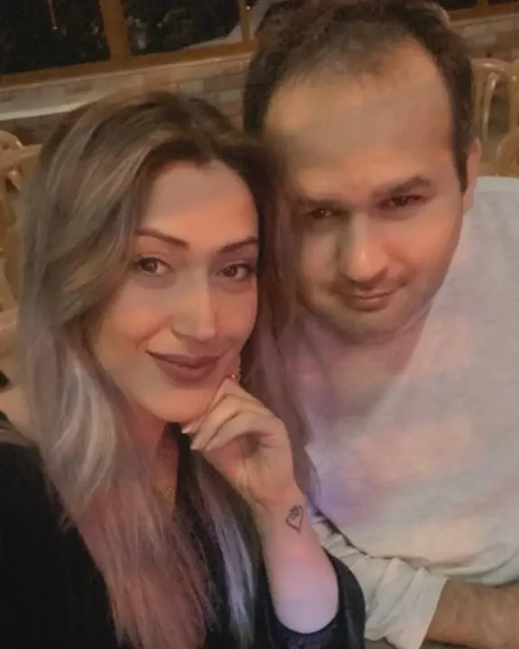
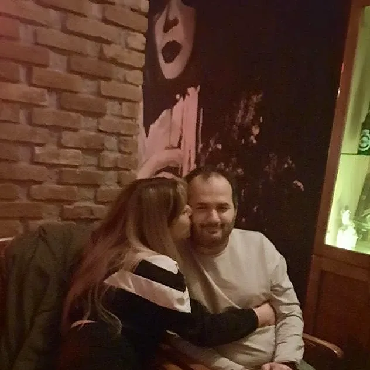
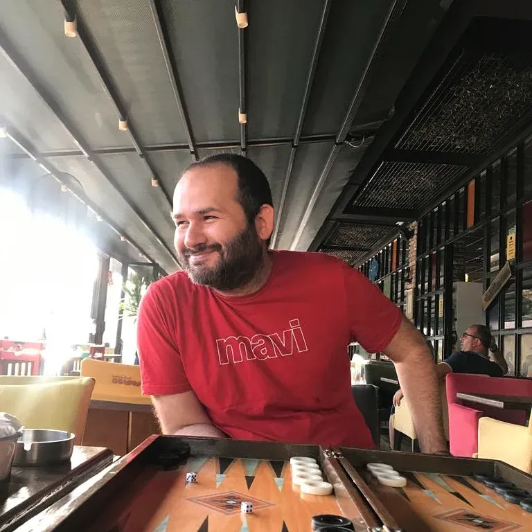
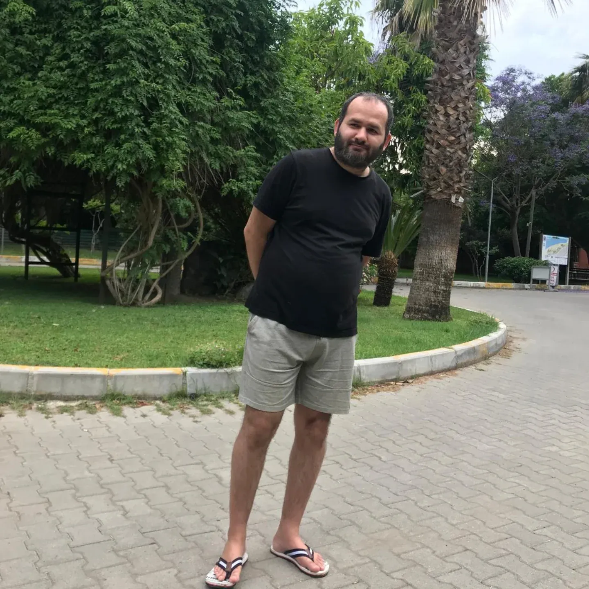
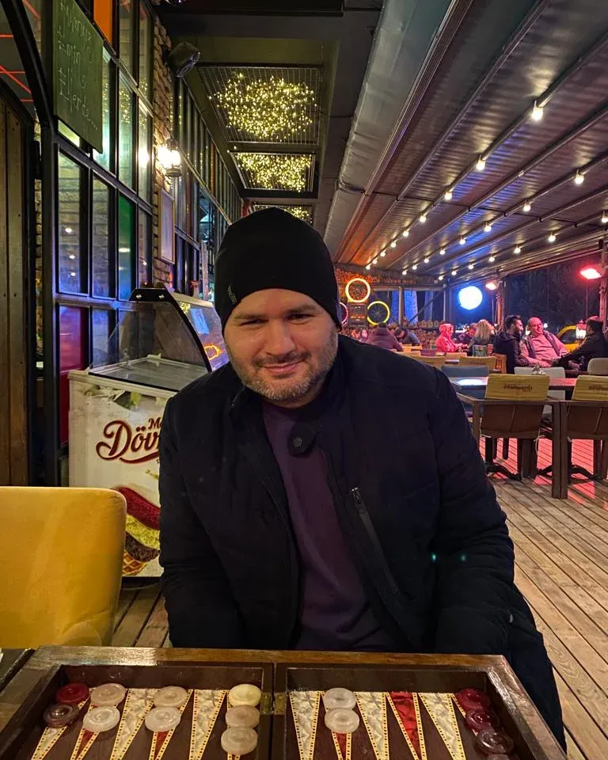

Ağabey
Hakan Rüştü
Balaban · Dededen gelen isim
Adını büyükbaba Rüştü’den alır. Ailenin sakin limanı; denizi, sabrı ve sohbeti sever. Herkesin “hallederiz” dediği yerde genelde o vardır.
- Deniz
- Sohbet
- Aile bağı
Anılar yükleniyor
Hakan Rüştü · Gökhan · Merve · Özcan · Aziz
Beş kardeş, dört büyük anne-baba ve aynı soydan gelen bir sıcaklık. Bu sayfada deniz kenarı kareleri, tavla masaları ve “iyi ki varsınız” demenin yüz farklı yolu var — hepsi Balaban.


Beş kardeş, bir çatı — Balaban’ın en güzel hâli.
Hikâyemiz
Bu aile, Rüştü ile Emet’in ve Cemil ile Turcan’ın bıraktığı izlerden büyüdü. Hakan Rüştü, Gökhan, Merve, Özcan ve Aziz — beş isim, tek soyadı, sayısız anı.
Sofra kurulunca herkes yerini bilir. Tavla masası açılınca rekabet başlar. Deniz çağırınca yol biter. Bizim hikâyemiz büyük sözlerle değil; küçük, sıcak ve gerçek günlerle anlatılır.
Büyüklerden kalan isimler, sofra kültürü ve “Balaban” adı hâlâ aynı kapıda yaşar.
Beş farklı karakter; bir araya gelince ev yeniden kalabalık ve sıcak olur.
Sahil, tavla, kahvaltı… Her kare, bir sonraki nesle taşınacak bir hatıra.
Biz Kimiz
Hakan Rüştü, Gökhan, Merve, Özcan ve Aziz — Balaban kardeşler. Farklı yollar, aynı kapı.
Balaban · Dededen gelen isim
Adını büyükbaba Rüştü’den alır. Ailenin sakin limanı; denizi, sabrı ve sohbeti sever. Herkesin “hallederiz” dediği yerde genelde o vardır.

KardeşBalaban · Neşe & hareket
Masayı güldüren, planı bozup daha güzelini bulan. Tavla, yol ve kahkaha onun dilinden konuşur; yanında sıkılmak mümkün değildir.
Balaban · Evin ışığı
Ailenin dengesi ve zarafeti. Sofrayı kurar, anıyı yakalar, herkesin kalbini bir cümleyle ısıtır. Bu albümdeki sıcaklığın çoğu ona aittir.
Balaban · Güvenilir duruş
Az konuşur, çok dinler; işin doğrusunu sessizce bilir. Ailede “Özcan’a soralım” cümlesi sık duyulur — çünkü o, güven demektir.

KardeşBalaban · Genç ruh
Ailenin enerjisi. Yeni fikir, yeni rota, yeni bir “hadi gidelim”. Yanında olmak, hayatı biraz daha hafif ve renkli yaşamaktır.
Köklerimiz
Baba tarafı Balaban, anne tarafı Gökçen — iki kök, tek aile.
Baba tarafı
Büyükbaba · Hakan Rüştü’nün isim babası
Büyükanne · Evin bereketi
Anne tarafı
Büyükbaba · Anne tarafından dede
Büyükanne · Anne tarafından nine
Zaman Tüneli
Baba tarafında Rüştü ile Emet Balaban; anne tarafında Cemil ile Turcan Gökçen. Bu dört isim, beş kardeşin hikâyesinin başlangıcıdır.
Aynı soyadı taşıyan beş farklı karakter. Büyükbaba Rüştü’nün adı Hakan’a geçti; sevgi ise hepsine.
Soğuk havada sıcak bir köşe, iki latte ve bitmeyen bir rekabet. Skoru kimse hatırlamıyor ama o kahkahalar hâlâ aklımızda.

Begonvillerin döküldüğü sokaklarda, göl kenarındaki kahvaltılarda, sıradan bir salı akşamında… Balaban hikâyesi devam ediyor.
Albüm
Filtreye dokun, hikâyenin o bölümüne git. Fotoğrafa tıklayınca büyük hâliyle açılır.
Ev dediğin dört duvar değil; dönmek için sabırsızlandığın kişi.
Akşam sohbetlerinden
Birlikte gülebiliyorsanız, geri kalan her şey çözülür.
Bir tavla maçının ortasında
En güzel yol, yanındaki kişi doğruysa en uzun olanıdır.
Sahile giderken, arabada
Mutluluk fotoğrafta poz vermez; arka planda yakalanır.
Albümü karıştırırken
Küçük Şeyler
Moral bozulduğunda reçete bellidir: arabaya atla, camı aç, sahile in. Dalga sesi her şeyi yerine oturtur.
Aile içi tek ciddi mesele. Skor tabelası yok ama iddiaya göre herkes önde.
İki saatten kısa süren kahvaltı, kahvaltı sayılmaz. Sohbet bittiğinde masa kalkar.
En sevdiğimiz fotoğraflar, kimsenin poz vermediği fotoğraflar. Bu albüm de öyle doldu.
Aynı şarkıyı yüzüncü kez dinlemek, o yolculuğu yeniden yaşamak demek.
Begonviller açtığında sokaklar değişir, biz de tekrar aynı rotayı yürürüz.
Ziyaretçi Defteri
Hakan Rüştü, Gökhan, Merve, Özcan veya Aziz’e; Rüştü, Emet, Cemil ya da Turcan’a bir cümle yaz. Notlar yalnızca bu tarayıcıda saklanır.